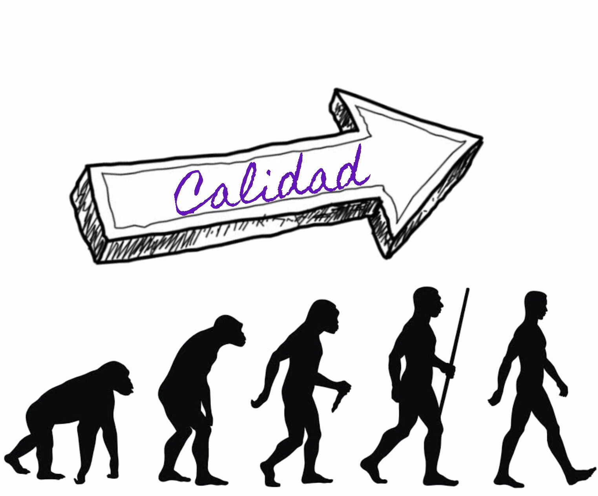

|  |
La calidad es un elemento inherente a todas las actividades realizadas por el hombre, desde la concepción misma de la civilización humana. Ésta se ha desarrollado como constructo social o modelo conceptual explicativo que, de acuerdo con ciertas circunstancias y necesidades, relaciona la responsabilidad que tienen las personas sobre la elaboración o fabricación de un objeto que proporciona satisfactoriamente valor de uso o de cambio. Algunos estudiosos aseveran que dicho concepto podría remontarse a las civilizaciones egipcias y fenicias en la edad media, donde se observaba la preocupación por el trabajo bien hecho y la necesidad de cumplir con estándares mínimos. En este sentido, la primera norma de calidad, se conoce en el código de Hammurabi que data aproximadamente del año 2150 a.C., cuya regla 229 establecía que “si un constructor construye una casa y no la hace con buena resistencia y la casa se derrumba y mata a los ocupantes, el constructor debe ser ejecutado”. |
Al inicio del siglo pasado, luego de la consolidación del desarrollo industrial capitalista, se genera un marco más propicio para el desarrollo de la calidad. A partir de este período hasta la actualidad, diversos autores coinciden en señalar que ésta ha sufrido una clara transformación, al atravesar por cuatro etapas: la de inspección, de control estadístico, de aseguramiento y de gestión total.
En estas etapas, Camisón et al. (2006) clasifican el concepto de calidad a partir de tres enfoques diferentes: técnico, humano y estratégico. El primero, denominado técnico, aparece en las fases de inspección de calidad y control estadístico de la calidad. Éste enfatiza en la eficiencia de los productos y procesos de la empresa mediante la reducción de costos. Seguidamente, el humano, desarrollado en el período de aseguramiento de la calidad, se orienta en los trabajadores y sus aportaciones a la mejora continua como elementos importantes de la gestión de calidad, en el rediseño de la estructura organizativa y en el liderazgo de la dirección. Finalmente, el estratégico surge en la etapa de gestión de la calidad total (GCT), donde los sistemas de calidad empiezan a incorporarse para prestar atención a los requerimientos del cliente. Esta perspectiva se centra en el servicio, en la satisfacción del cliente, en la integración del enfoque técnico y humano, en el aprendizaje, en la mejora continua y en los efectos sobre los distintos agentes con intereses en la organización.
El avance de las etapas y enfoques del concepto de calidad ha sido posible debido a la atención prestada por un gran número de teóricos e investigadores que han estudiado este constructo a través del tiempo. Sin embargo, a pesar de su constante desarrollo y análisis, precisar su significado no ha sido tarea sencilla, puesto que es un término polisémico y multidimensional sobre el cual no existe una interpretación comúnmente aceptada, pues es definida e interpretada de diferentes maneras según el ámbito de análisis. No es lo mismo que se haga referencia a calidad en el producto, que en el proceso o servicio, así como tampoco lo es calidad en la empresa, que en el gobierno o la enseñanza. Diversos autores sugieren que esta confusión se genera cuando se traslada una definición en particular a otro entorno, sin antes delimitar el sujeto u objeto de enfoque.